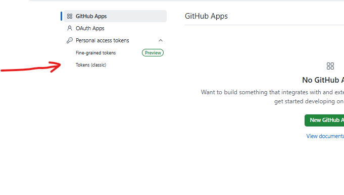
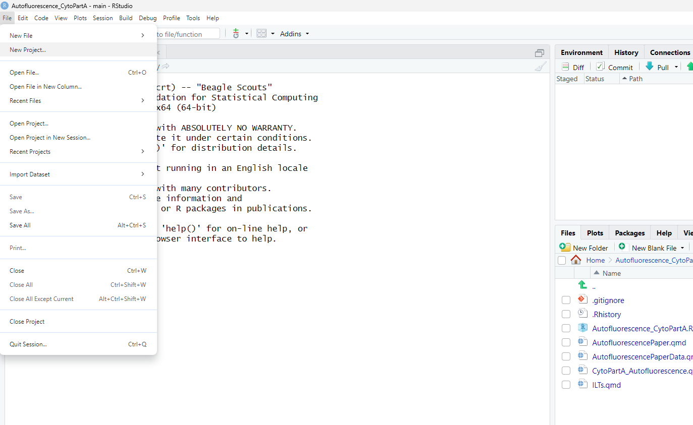
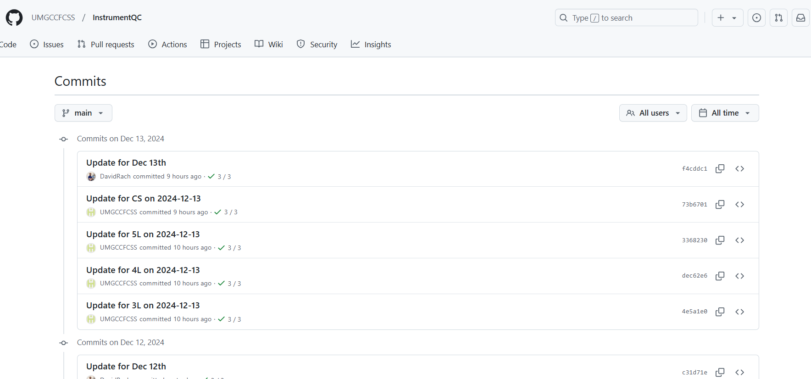

install.packages("devtools")
install.packages("BiocManager")Forking the project
Now that your GitHub account is set up, it’s time to put it to use. Our core’s version of the website is contained within the InstrumentQC repository. This is publicly available, and since the software repository is licensed under a free copyleft license, you are able to fork (ie. copy) the existing project, modify it, and share (ie. distribute) it.
To get started, you will first navigate to the InstrumentQC repository. From here you will select the fork the repository option

GitHub will then give you the option to rename the project or to keep the existing name. If you modify the name, you will need to adjust a couple of lines in the future for the file.path arguments, but this will be a minor inconvenience so don’t let that stop you if you have thought of a better name.

With that done, you now have your own copy of the repository. Since it is forked, you can now modify and customize the dashboard for the tracking of QC data for your own. Please make a note of your forked repositories url before proceeding as you will need it when bringing the project into your local computer environment with Rstudio later.

Linking Rstudio and GitHub
The next task is to get both Rstudio and Git setup and communicating with each other. This will allow for tracking version changes, and sending modified repository files to GitHub without any issues.
Setup
Let’s start by opening Rstudio. If it is your first time opening it, you will get a pop-up window asking which version of R to use. Select the newest (or default) R installation.
We want to make sure make sure Rstudio can communicate with GitHub through Git. To do this we will first install the R package devtools, followed by the BiocManager package. To do so, copy the following lines of code invidivually into the console window (generally on the bottom left of your screen) and hit enter to run the commands:
For coding-beginners, please note, during the installation of an R package, if you are missing required dependencies, you will be asked whether you want to install the missing packages. Select yes for these. When there are newer versions of an R package, it will ask if you want to update to the newer version, which in general is a good idea but not required if you are short on time.
During the installation process, if an error is encountered, you will get an error message and a red troubleshooting explanation describing the issue. Read this carefully, and install any missing package dependencies needed to fix the issue by swapping in the package name between the quotation marks similar to what was done in the code chunk above to install the devtools package.
Once the R packages have succesfully installed, we need to activate them for that session by calling them with the library function before continuing.
library(devtools)Loading required package: usethislibrary(BiocManager)Bioconductor version '3.19' is out-of-date; the current release version '3.20'
is available with R version '4.4'; see https://bioconductor.org/install
Attaching package: 'BiocManager'The following object is masked from 'package:devtools':
installAdjacent to your console tab on the lower left, there is another tab called terminal. Go ahead and click it.

Now that you have switched from the console to the terminal,using your mouse copy then right-click-paste the following lines of code individually into the terminal, editing the text to include your GitHub username and then email linked used for that GitHub account.
git config --global user.email "JohnDoe@gmail.com"
git config --global user.name "John Doe"GitHub Token
With this done, it is now time to get an authorization GitHub Token that will allow your local computer to send/receive files from your the GitHub repository.
To do this, open a browser, and navigate back to your GitHub account, click on your profile icon on the far upper right, and then select settings
From here, you will navigate to the lower left side and click on developer settings
Once you are on the next page, you will select Tokens (classic) option

From there, you will now proceed to click on Generate new token and select the classic option

On the next screen, things get busy. There are a few things we need to focus on. First write a note for the token containing the individual instrument name. Select for Expiration Date either the no-expiration date (to avoid needing to repeat this setup process in the near future). From here, you only need to click on the repo option to grant those associated accesses. Proceed all the way down to the bottom of the screen, and click on the green generate token button.

The website will refresh and provide you a GitHub token and the option to copy it. Copy it and temporarily store it in a .txt file (notepad) as you will need it when setting up the connection between Github and Rstudio. Please note, you will not be able to see the token code again after leaving this screen, so stash it wisely, otherwise you will need to regenerate another token. Also, make sure to be cautious and not post the token .txt file on the public internet, unless you enjoy emails from IT.

Rstudio
Now that you have your token, go back to Rstudio, and enter the following lines of code into your console:
gitcreds::gitcreds_set()A pop-up window will appear. Follow the instructions and when prompted, provide it the Github Token code that you generated. Next hit enter. You should be all set to now pull/push (ie. receive/send) files to GitHub from your local computer.
While we are here, let’s address the last thing we will need the GitHub access token for. Go ahead and enter the following line of code in the console:
usethis::edit_r_environ()This will open an .Renviron file that will likely be blank. Enter the following line of code, swapping in your specific token in its entirety between the quotation marks.
GITHUB_PAT <- "GitHubTokenGoesHere"Once this is done, save the file and close-out/restart Rstudio.
New Project
Having completed the above, you should now have Git setup to allow Rstudio to communicate with your GitHub account. This should allow you to bring in your copy of the forked InstrumentQC repository to your local computer, and as you start modifying it, track and save the changes to your GitHub repository where you can access them remotely.
To do this, upon opening Rstudio, navigate to the upper left corner to the File tab and select create a New Project

From here, you will select the Version Control option

You will next select to use the Git option

And now you will provide the url to the forked repository, (ie. the version on your own GitHub). The Project directory should autopopulate.
Before hitting Create Project, decide on where the project will be saved at by hitting browse.
In general, for many Windows computers, the default is under the documents folder. Alternatively, you could place it in a different location. For some workspaces where everything is now on OneDrive, the default folder may be in the cloud. Ideally, you want to have the folder saved on your local computer, to avoid complicating the file.path setup and automating task scheduler setup later on. So if the default is saving to somewhere on OneDrive, create a new folder under the local C: drive and select that folder as your save location.
Once you know where you are saving the project to, hit Create Project.
With all that done, you now have the project and all it’s associated code available locally.
Making Changes
We want to make sure before proceeding that you can make changes to the file, and that after saving these changes, that they can be committed and passed (ie, pushed) to GitHub.
Navigate to the upper right-side of your Rstudio window and click on Git. It will appear mostly empty at this point in time. Next, look inside the repository folder by either using the Ctrl + O shortcut or navigate to the upper-left of R studio screen, click File, and then Open File. Once you get to the navigation screen, select the Examples_staff.qmd file and open it.

Go ahead and add a couple white spaces between the first line of text and the code block, and then save the file (step 1). If you look under Git tab on your upper-right you will see that the “Examples_staff.qmd” file is now listed as having had changes made.
You will next click the white box next to “Examples_staff.qmd” (underneath Staged) (step 2). This tells the computer what changes to specific files it will be keeping for tracking purposes.
Next click the Commit button with the green checkmark (step 3).

A new window will appear. On this screen you can see the changes made to individual files, with additions being in green, and deletions being in red.
Write a brief commit message (“Testing that GitHub is setup correctly”) (step 4) and hit commit (step 5). If you get a successful commit message, proceed and click the green push up-arrow (step 6). This will start the process of transferring (ie. pushing) the tracked (staged & commited) changes to GitHub.

If the push to GitHub was successful, you should see a screen that looks similar to this one:
Your system should now be set up correctly. To verify, open your browser and navigate back to your Github repository. You will then click on your commits.
If the version control chages were successfully pushed, you should find your most recent commits and your commit message shown at the top of the page, looking something similar to this.

And if this is the case, congratulations! You have set up the software and connections that are necessary for your local instrument computer to talk with the GitHub repository. The next steps should be easier.
Next Steps
You have now successfully setup an individual computer with Rstudio and Git. If you are trying to get set-up for multiple instruments on multiple computers, you will need to repear this process for each of them individually starting from the Setup section.
For our facility, we name each new GitHub token based on the cytometer the respective computer is connected with to make tracking easier.